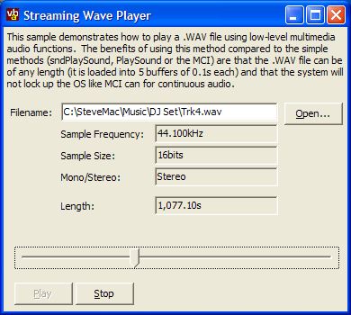

WaveStream Sample Application and Class (47K)
WaveStream Sample Application and Class (47K)
 21 Jan 2003
21 Jan 2003
The original code failed under later versions of Windows. This was because the way the WAVEHDR structure is used was changed: in earlier versions, the lpNext reserved member could be copied using CopyMemory, but in later versions it could not. (It would have been safer not to mess with this anyway as the Platform SDK clearly states it is reserved, but hindsight is a simple thing). The new version fixes this problem by only copying the non-reserved members of the structure.
 Subclassing Without The Crashes
Subclassing Without The Crashes

Streaming .WAV File Player
Play .WAV files of any length using the Multimedia API without problems
Playing digital audio can be achieved at a number of different levels under windows. At the simplest level, there is the Multimedia Control Interface (MCI) control provided with VB. This is turn is a very thin wrapper around the MCI API provided with Win32, which offers about the same level of control for playing waves as the API PlaySound and sndPlaySound functions.
At a deeper level, your application can take charge of reading chunks of audio from disk and streaming it directly to the sound card. The advantage of these methods is you get more control over how the audio is played, and you can play audio files of arbitrary length without using all your memory.
Playing Waves
The main advantage of the deeper level methods is that with the MCI and PlaySound methods, the system has to allocate memory for the entire sound before it starts. With a streaming approach, you can read the sound in in small chunks (say 0.1s of audio) allowing you to play audio samples of any length (and remember that a CD quality stereo WAV file occupies around 10Mb/minute!). As demonstrated in the picture above, the streaming player works just fine on a 185Mb CD Quality wave file (some 18 minutes of 16 bit stereo at 44.1kHz).
Another advantage of using the multimedia methods is you can modify the sound before you play it. You could filter it by averaging the bytes before putting them into the sound card's buffer. Or you could create an echo effect by preparing an additional audio buffer which you save attenuated samples of the main sound to as it plays. You can even create an audio synthesizer this way by creating the waveform on the fly, although remember that the ear can discern timing to about 15ms accuracy, so you have to be careful with how large your buffers are.
An Uncontrollable Lust for Power
Using the multimedia API at this level gives you more control, but the downside is additional complexity. This sample demonstrates how you can play back standard .WAV files, however, if you need to be able to play back sounds which have are not directly compatible with your soundcard (for example, .WAV files with ADPCM compression or .MP3 files) then this sample alone will not work because it would need to invoke the Audio Compression Manager (ACM) functions to do that (which may or may not be the subject of a future article, depending on whether I can figure it out!).
The cWavPlayer Class
The cWavPlayer class supplied with the download wraps up access to stream digital audio to the sound card. Fundamentally, it works like this:
- OpenFile
Opens a Multimedia IO device handle, reads the header of the WAV file to check the format of the WAV file and then creates a number of buffers to hold 0.1s each of the wave data read in from the file. - Play
Creates a WaveOut handle for passing data to the soundcard from the WAV file and specifies that when data is needed by the soundcard it should post a message to the window. It then prepares each of the buffers to send data to the wave out handle and initiates the play callback loop by posting the message to the window. - Play callback loop
Reads data from the file into the wave buffer pointed to by the wave header, and then writes it out to the sound card's driver. When the data is exhausted, the buffer is unprepared and finally once all the buffers have been unprepared the WaveOut handle is closed.
Using the class as provided is straightforward. Add the class to your project, and ensure the project references SSubTmr.DLL. If you're using VB6, then note that you should reference SSubTmr6.DLL and modify the code by replacing "SSubTimer." with "SSubTimer6." (without the quotes).
Next open a .WAV file with the OpenFile method. At this stage you can read various information about the wave file, such as the sampling frequency (SamplesPerSecond), the bit depth (BitsPerSample), whether the file is stereo or mono (Channels).
To play the file, use the Play method. You can pause it at any time by choosing the Stop method, and change the position in the file using the FileSeek method.
You can get the position of the playback at any time using the Position method. Remember that with this class the audio is buffered. There are five (NUM_BUFFERS) independent buffers set up and each has a length of approximately 0.1s (BUFFER_SECONDS) of Audio. This affects the position.
To reduce the latency associated with the position and starting and stopping playback, you can modify the number of buffers and the length by changing the constants in the class. The amount they can be reduced really depends on the performance of the machine you're using, so in a real application you'd probably want these to be configurable. On an Athlon 2200XP with a stock soundcard, it is possible to operate with just two buffers and a 0.05s resolution, which really isn't bad at all. Note that latency is only really an issue if you're trying to accurately sync two sounds. If both sounds are delayed by exactly the same latency, then there won't be any problem.
Coincidentally
The DJ Set playing in the picture above was part of a one-off DJ event on 14 Oct 2002 inspired by the exceptional 2 Many DJs album "As Heard On Radio Soulwax Pt 2" played to a crowd of fashionable yet mainly middle-aged listeners at the BugBar in Brixton, London. Full track listing, betraying my own advanced years and subliminally mixed courtesy of Acid was as follows:
- James Last and His Orchestra - Fanfare
- Jesse James - Shake It (Like A White Girl)
- Young MC - Know How
- Tone-Loc - Funky Cold Medina
- Michael Poliakarof - Lipstick vs Tone-Loc - Funky Cold Medina
- Blondie - Heart of Glass
- Survivor - The Eye of The Tiger
- Paul Hardcastle - 19
- Dynamix II - Give the DJ A Break vs Murray Head - Bangkok
- Julian Cope - World Shut Your Mouth
- NWA - Express Yourself vs The Monkees - Stepping Stone
- S'Express - Theme From S'Express
- Trio - Da Da Da
- M/A/R/R/S - Pump Up The Volume
- The Residents - Kaw Liga vs Michael Jackson - Billie Jean
- Skee Lo - I Wish
- Royksopp - Epie
- The Orb - Little Fluffy Cloud vs Dolly Parton - 9 to 5
- En Vogue - Never Gonna Get It (Acappella)
- Maceo And The Macks - Cross The Tracks
- Cameo - Word Up
- Visage - Fade To Grey vs Superlover Cee & Casanova Rud - Super Casanova
- Yazoo - Don't Go
- KLF - What Time Is Love vs Tiffany - I Think We're Alone Now
- Donna Summer - I Feel Love
- New Order - Blue Monday
- Tiga & Zintherius - Sunglasses At Night
- Chaka Khan - I Feel For You
- Run DMC - Walk This Way
- Michael Jackson - Don't Stop Until You Get Enough
- Sub Sub - Ain't No Love, Ain't No Use
- Deee-Lite - Groove Is In The Heart
- David Carrera - Vicious Game vs Harold Faltermeyer - Axel F
- Adult - Hand To Phone
- Irene Cara - Fame
- Kim Wilde - Kids of America
I hate to say it, but the sequence from "Don't Go" onwards was heartbreakingly good, and the mix from New Order into Tiga & Zintherius...